Welcome — Start the Demo
Navigate to /demo to open the interactive walkthrough. The demo page introduces every feature with a step-by-step wizard. Clicking Reset Demo clears all existing data and seeds a fresh patient profile so you start from a clean, consistent state.

Reset Complete — Clean Slate
After clicking Reset Demo, the agent wipes every SQLite table (profile, people, events, routines, medications, logs, reminders), cancels any existing schedules, and inserts a realistic seed dataset. This gives us Jane Doe, her doctor, her children, two medications, routines, and recent events — all ready to explore.
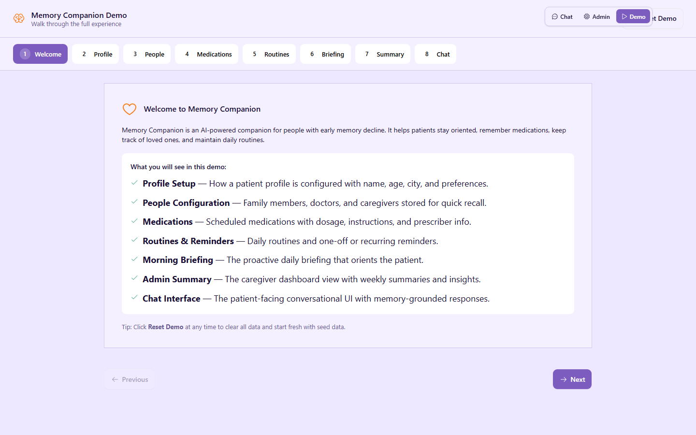
Patient Profile
The profile stores only core identity facts: name, age, city, timezone, and notes. This is the anti-hallucination design in action — the AI system prompt contains only today's date, the patient's name, and their city. Every other fact lives in SQLite and is retrieved on demand via tools.
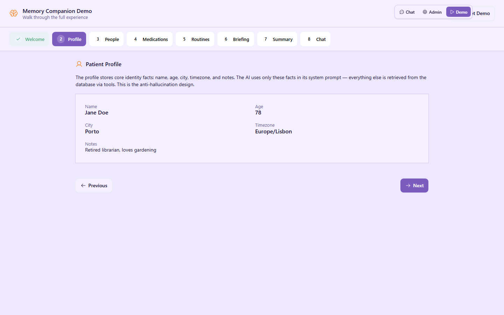
People Configuration
The companion remembers important people so the patient can ask "Who is Maria?" or "When did I last see Dr. Silva?" Each person card shows relationship, phone, email, address, and notes. When the patient mentions someone in chat, the silent extraction pass automatically updates last_mentioned_at.
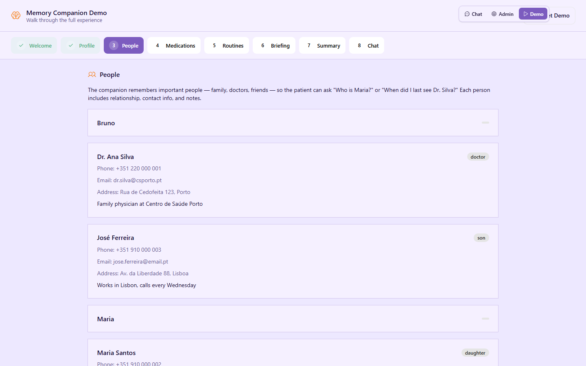
Medications
Medications are stored with name, dosage, scheduled times, instructions, and prescriber. The agent creates per-medication cron schedules and sends reminder cards at the exact time. If the patient does not respond within 45 minutes, a follow-up card is sent once. This audit trail is stored in medication_logs.
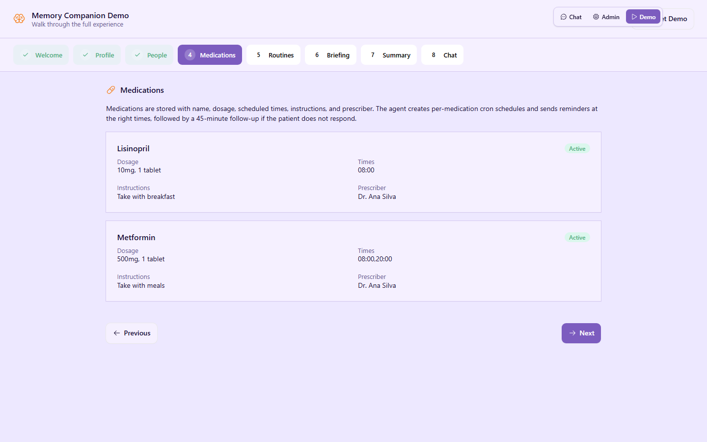
Routines & Reminders
Routines are recurring daily activities (walks, meals, appointments). Reminders can be one-off or recurring and appear as actionable notification cards. Inactive routines or reminders remain in the database but are hidden from the grounding card and briefing.
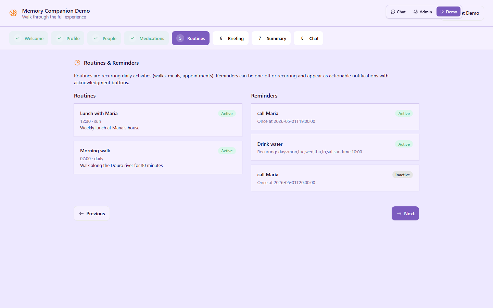
Morning Briefing — Before Trigger
Every morning the companion sends a proactive briefing that orients the patient: today's date, the city, scheduled medications, routines, and a gentle mood check. In production this fires automatically via cron at the patient's wake-up time. In the demo we trigger it manually.
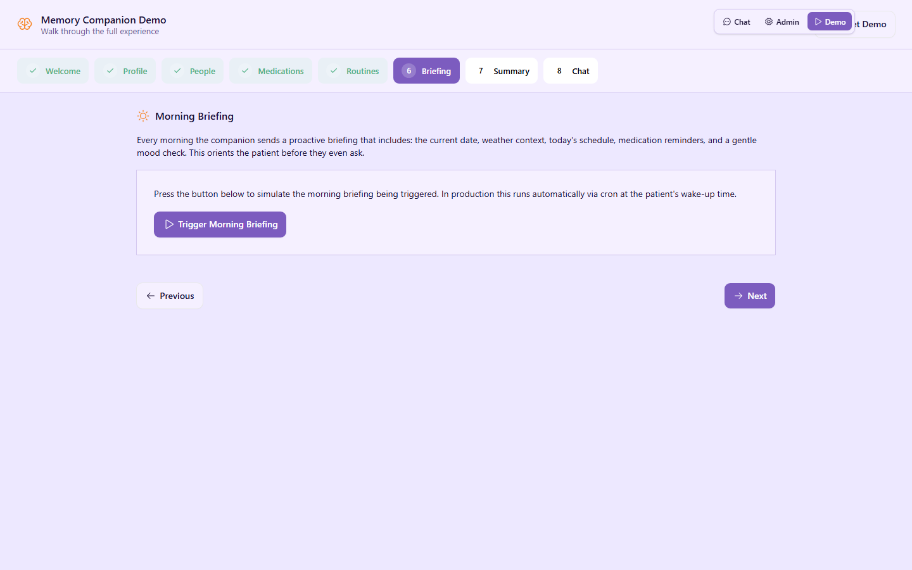
Morning Briefing — Triggered
After triggering, the demo shows an example of what the patient sees: a friendly greeting, today's schedule, medication list, and a mood question. The real briefing is sent as a notification card to all connected clients via this.broadcast().
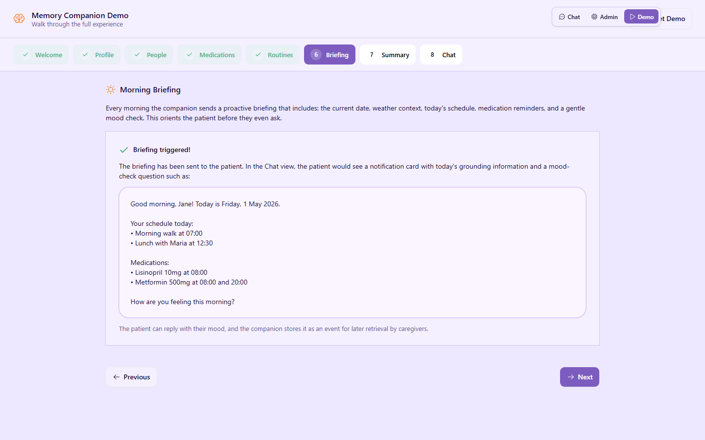
Admin Summary
The caregiver dashboard provides a weekly summary: mood entries, medication adherence (taken vs skipped vs no response), recent events, and help requests. This gives caregivers a quick snapshot of wellbeing without reading every chat message.
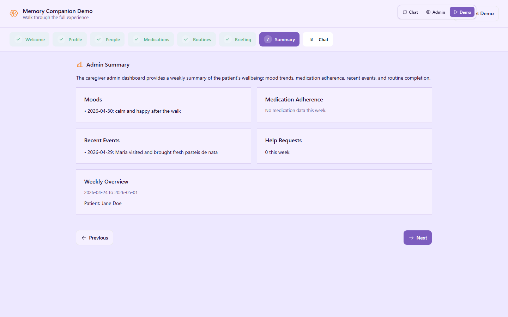
Chat Preview
The chat interface is the heart of Memory Companion. Every message triggers two parallel AI calls: one for the reply, one for silent memory extraction. The demo shows example conversations that are fully grounded by database retrieval — no invented facts.

Live Chat View
Switching to the real Chat view shows the patient-facing interface. The header displays connection status, a debug toggle, theme switcher, and a clear-history button. The notification area at the top is where briefing and medication reminder cards appear.
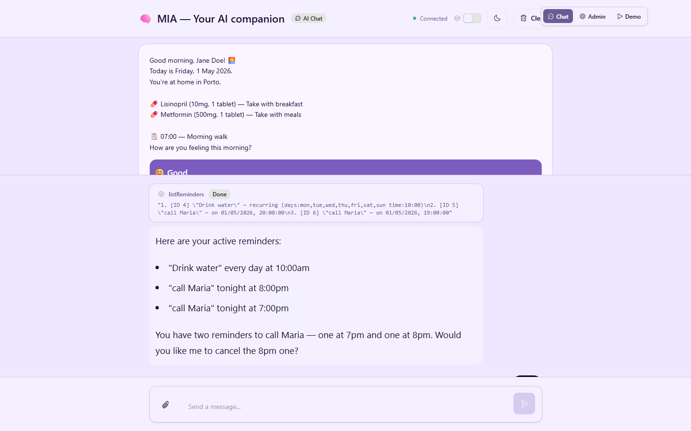
Admin Dashboard — Profile
The Admin dashboard connects to the same agent via WebSocket and exposes full CRUD over every table. The Profile tab shows the single profile row with inline editing for name, age, city, timezone, notes, and custom instructions.
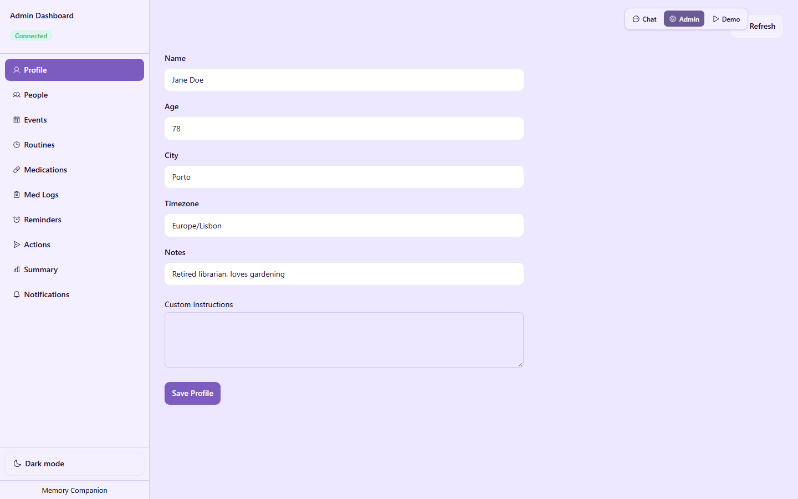
Admin Dashboard — People
The People tab lists every person in the database with inline editing. You can add new people via the grid at the top, edit existing rows in place, or delete entries. This is the same data the patient asks about in chat.
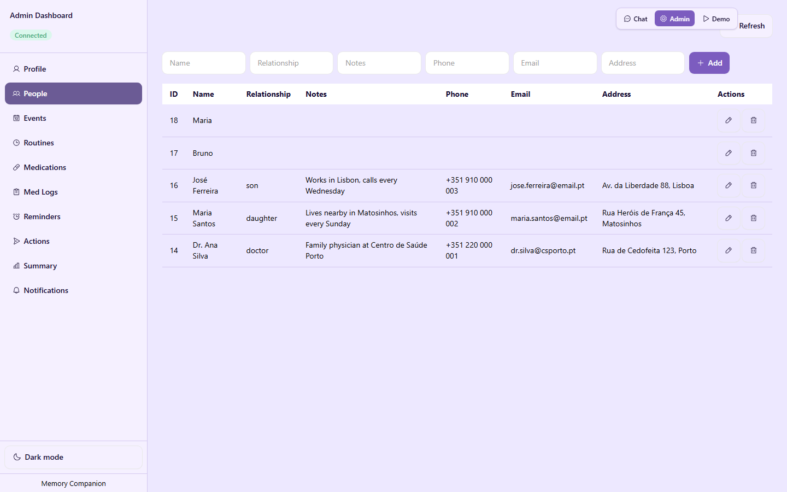
Admin Dashboard — Medications
The Medications tab shows all active and inactive medications. Scheduled times are stored as comma-separated strings (e.g., 08:00,20:00). Adding or editing a medication here updates the database, and toggling Active/Inactive controls whether reminder schedules are created.
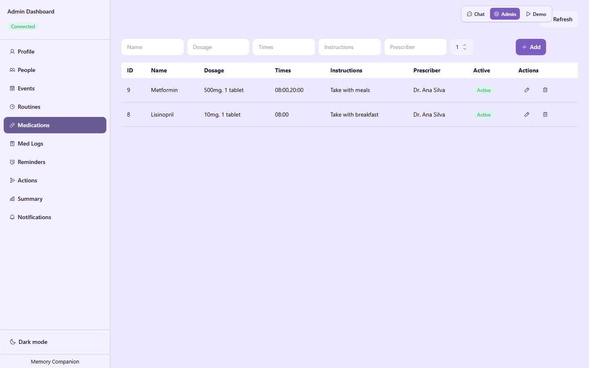
Admin Dashboard — Routines
Routines appear in the morning briefing and grounding card when active. The admin view shows type (routine, appointment, or task), scheduled time, days of the week, and description. Inactive routines are preserved but excluded from patient-facing summaries.
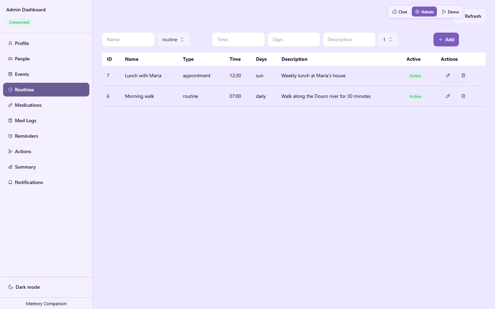
Admin Dashboard — Reminders
Reminders can be one-off or recurring. Recurring reminders use a cron-style schedule parsed from a human-readable string. The admin view shows label, type, schedule, and active status. This is where caregivers create alerts like "Drink water" or "Take blood pressure."
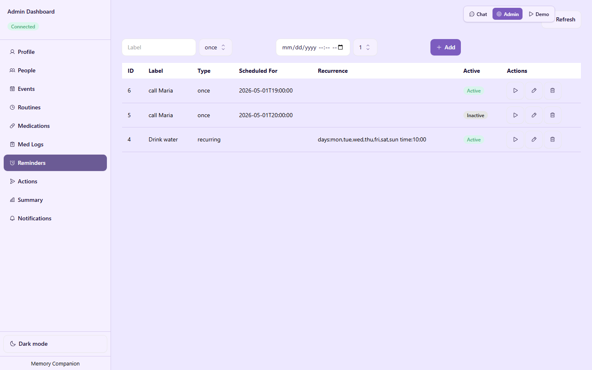
Admin Dashboard — Actions
The Actions tab gives caregivers direct control over scheduled tasks. You can trigger the morning briefing immediately, send an evening check-in, or broadcast a custom notification. This is useful for demos and for manually nudging the patient outside normal cron hours.
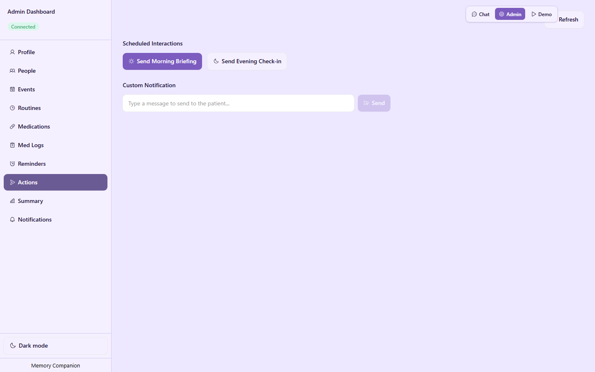
Send a Briefing from Admin
Clicking Send Morning Briefing in the Actions tab calls the same triggerMorningBriefing() method the cron uses. The button shows a loading state while the AI generates the briefing text, then the notification is broadcast to all connected clients.
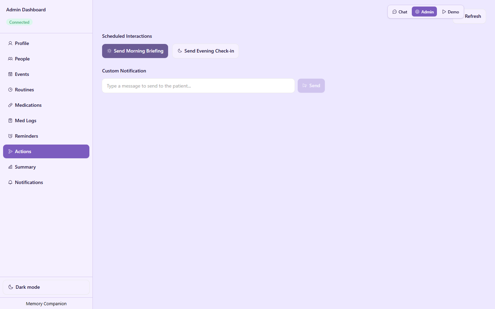
Patient Receives the Briefing
Switching back to the Chat view, the patient sees the briefing notification card at the top of the screen. It contains the grounding information and mood-check buttons. Tapping a mood logs an event and dismisses the card — no typing required.